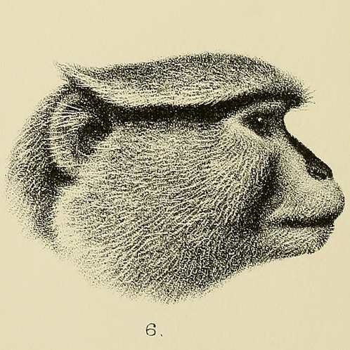
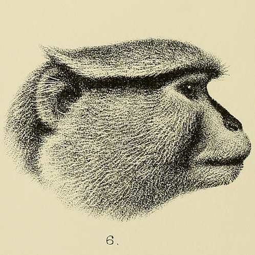

Welcome - Bienvenido
Bienvenido al sitio web oficial del Santuario Forestal de Barranquitas, ubicado en el Barrio Palo Hincado de
Barranquitas, Puerto Rico.
Welcome to the official website of the Barranquitas Woodland Sanctuary, located in the Palo Hincado neighbourhood of
Barranquitas, Puerto Rico.
Menu
List of our Animals - Lista de nuestros Animales
Mammalia
- Macaca mulatta - Rhesus macaque - Macaco rhesus
- Erythrocebus patas - Hussar monkey - Mono patas
- Sus scrofa domesticus - Feral hogs - Cerdos silvestres
- Odocoileus virginianus - Whitetail deer - Venado gris
- Syncerus caffer mathewsi - African buffalo - Bufalo africano
- Canis familiaris - Stray dogs - Perros callejeros
- Herpestes auropunctatus - Small Indian mongoose - Mangosta india
- Rattus rattus - Roof rats - Ratas de barco
Aves
- Columba livia - Rock pigeon - Paloma bravia
- Myiopsitta monachus - Monk parakeet - Perico monje
- Tyto alba bondi - Barn owl - Lechuza blanca
Herpetofauna
- Caiman crocodilus - Speckled caiman - Caiman babilla
- Iguana iguana - Green iguanas - Iguanas verdes
- Rhinella marina - Cane toad - Sapo gigante
- Osteopilus septentrionalis - Cuban tree-frog - Rana platanera cubana
- Lithobates catesbeianus - American bullfrog - Rana toro norteamericana
Ilustraciones - Pictures


 


Siganos - Follow Us
- YouTube
- Instagram
- LinkedIn
Copyright 2025, Departamento de Agricultura.